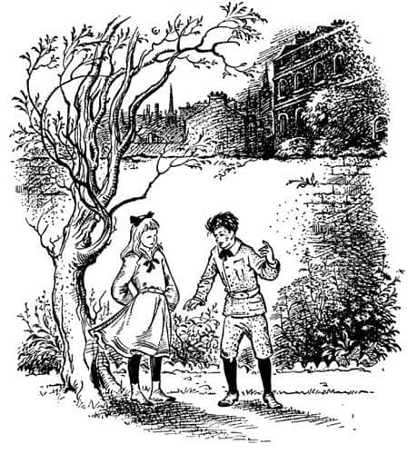
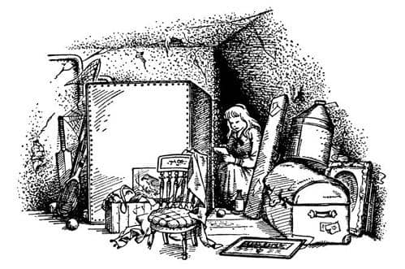
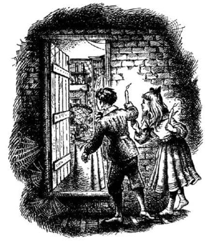

Yanlış Kapı
Bu, uzun zaman önce, dedenizin çocukluğunda olmuş bir şeyin hikâyesidir. Çok önemli bir hikâyedir, çünkü kendi dünyamızla Narnia ülkesi arasındaki gidiş gelişlerin nasıl başladığını anlatır.
O günlerde, Sherlock Holmes hâlâ Baker Street’te yaşıyordu ve Bastables hâlâ Lewisham yolunda define arıyordu. O günlerde eğer çocuksanız, her gün o sert ve kolalı yakayı takmak zorundaydınız ve okullar genellikle şimdikinden daha kötüydü, fakat yemekler daha iyiydi. Tatlılara gelince, onların ne kadar ucuz ve lezzetli olduğunu sizlere söylemeyeceğim, çünkü bu sadece boşu boşuna ağzınızı sulandırır. Ve yine o günlerde Londra’da, Polly Plummer adında bir kız yaşıyordu.
Polly, birbirine bitişik, uzun sıra evlerin birinde yaşıyordu. Bir sabah bir erkek çocuk, yan bahçenin duvarı üstüne tırmanıp yüzünü gösterdiğinde arka bahçedeydi. Polly çok şaşırmıştı; çünkü şimdiye kadar o evde hiç çocuk yoktu. Orada sadece bekâr kardeşler, Bay ve Bayan Ketterley’ler oturuyordu. Bu yüzden ilgiyle çocuğa baktı. Yabancı çocuğun yüzü çok kirliydi. Önce ellerini toprağa bulamış, sonra iyice bir ağlamış ve sonra da yüzünü elleriyle kurulamış olsaydı, bundan daha kirli olamazdı. Gerçekte çocuğun yaptığı da hemen hemen buydu.
“Merhaba” dedi Polly.
“Merhaba” dedi çocuk. “Senin adın ne?”
“Polly” dedi Polly. “Seninki ne?”
“Digory” dedi çocuk.
“Ne garip bir isim!” dedi Polly.
“Polly’nin yarısı kadar bile garip değil” dedi Digory.
“Elbette garip” dedi Polly.
“Hayır değil” dedi Digory.
“Ne olursa olsun, ben yüzümü yıkarım” dedi Polly, “ki senin de yapman gereken budur, özellikle—” dedi ve sustu. “Ağladıktan sonra” diyecekti ama bunun pek nazik olmayacağını düşünmüştü.
Digory, kimsenin ağladığını bilmesine aldırmayacak kadar mutsuz biri gibi yüksek sesle:
“Tamam, ağladım işte” dedi. “Sen de ağlardın” diye devam etti; “eğer bütün hayatın taşrada geçseydi ve bir atın olsaydı ve bahçenin dibinden bir nehir aksaydı ve sonra da yaşamak için bunun gibi kötü bir yere getirilseydin.”
“Londra kötü bir yer değil ki” dedi Polly kızgınlıkla.

Fakat çocuk onu dinlemeyecek kadar heyecanlıydı ve konuşmaya devam ediyordu:
“Ve eğer baban uzaklarda, Hindistan’daysa – ve deli dayın ve teyzenle yaşamak zorunda kalmışsan (bundan kim hoşlanır ki?) – ve bunun sebebi de onların annene bakmalarıysa – ve annen hastaysa ve ölecekse.” Burada çocuğun yüzü aniden, sanki ağlamamaya çalışıyormuş gibi değişti.
“Bilmiyordum. Özür dilerim” dedi Polly alçakgönüllülükle. Ve sonra da ne diyeceğini bilemediği için, Digory’nin aklını neşeli konulara çelmek üzere sordu:
“Bay Ketterley gerçekten deli mi?”
“Ya deli” dedi Digory, “ya da bir sır saklıyor. En üst katta bir çalışma odası var ve Letty Teyze oraya gitmemem gerektiğini söylüyor. Öncelikle bu bana biraz kuşkulu görünüyor. Sonra bir şey daha var. Yemekte ne zaman bana bir şey söyleyecek olsa – teyzemle konuşmayı denemez bile – teyzem onu hep susturuyor. “Çocuğu meraklandırma Andrew” ya da “Eminim Digory böyle şeyleri dinlemek istemez” ya da “Digory, dışarıya çıkıp bahçede oynamak istemez misin?” diyor.
“Ne tür şeyler söylemek istiyor sana?”
“Bilmiyorum. Hiç yeteri kadar konuşamadı. Fakat dahası var. Bir gece – yani dün gece – tavan arasına çıkan merdivenlerin dibinden geçerek yatmaya giderken (oradan geçmek pek hoşuma gitmiyor doğrusu) bir çığlık duydum.”
“Belki de çılgın karısını orada kapalı tutuyor.”
“Evet, bunu ben de düşündüm.”
“Ya da belki de kalpazandır.”
“Ya da Define Adası’nın başlangıcındaki gibi eski korsanlardandır ve hep eski yoldaşlarından saklanmak zorundadır.”
“Ne heyecanlı!” dedi Polly. “Sizin evin bu kadar ilginç olduğunu bilmezdim.”
“İlginç olduğunu düşünebilirsin” dedi Digory. “Fakat orada uyumak zorunda olsaydın bundan hiç de hoşlanmazdın. Yatakta uyanık uzanırken Andrew Dayı’nın ayak seslerinin ağır ağır koridordan senin odana yaklaştığını dinlemek nasıl bir şey sence? Gözleri de öylesine korkunç ki.”
Polly ve Digory bu şekilde birbirleriyle tanışmış oldular. Henüz yaz tatilinin başlangıcı olması nedeniyle ikisi de denize gitmeyecekleri için, hemen hemen her gün buluştular. Bu maceralara atılmalarının asıl nedeni, o yazın yıllardan beri yaşanan en yağışlı ve soğuk yaz olmasıydı. Bu durum onları evin içinde, ev içi araştırması diyebileceğiniz bir şeyler yapmaya yöneltti. Büyük bir evde ya da sıra evlerde, bir mumla bu kadar araştırma yapabilmek ne güzeldir. Polly, uzun zaman önce, evlerinin tavan arasındaki sandık odasının küçük kapısı açıldığında görülebilen su deposunu ve onun arkasındaki, biraz dikkatle tırmanırsanız ulaşabileceğiniz, karanlık yeri keşfetmişti. Burası, bir yanı tuğla duvar, diğer yanı ise eğimli bir çatıdan oluşan tünel gibi bir yerdi. Çatının bazı kiremitlerinin arasından ışık sızmaktaydı. Bu tünelin tabanı yoktu. Kirişten kirişe atlamak zorundaydınız ve kirişlerin arası sadece sıvayla kaplanmıştı. Eğer kiriş aralarına basarsanız kendinizi aşağıdaki odada bulurdunuz. Polly, tüneldeki su deposunun hemen yanındaki bölümü kaçakçıların sığındığı bir mağara gibi kullanıyordu. Eski ambalaj kutularının parçalarını, kırık mutfak sandalyelerinin oturaklarını ve buna benzer şeyleri oraya getirmişti ve bunları kirişlerin üzerine koyarak bir zemin oluşturabilmişti. Burada, içinde değişik değerli şeylerin bulunduğu bir para kutusu, yazmakta olduğu bir hikâye ve birkaç elma saklıyordu. Sık sık zencefilli gazoz içerdi orada. Boş şişeler orayı kaçakçı mağaralarına daha da çok benzetiyordu.

Digory mağarayı çok sevmişti (Polly hikâyeyi görmesine izin vermemişti) fakat araştırma işiyle daha fazla ilgileniyordu.
“Buraya bak” dedi. “Bu tünel nereye kadar gidiyor? Yani evin sonunda tünel de bitiyor mu?”
“Hayır” dedi Polly. “Duvarlar tavanın ötesine geçmiyor. Tünel devam ediyor. Nereye kadar bilmiyorum.”
“Öyleyse biz tüm bu sıra evlerin sonuna kadar gidebiliriz.”
“Evet gidebiliriz” dedi Polly. “Ve ben derim ki!”
“Ne?”
“Diğer evlerin içine de girebiliriz.”
“Evet, ve de hırsız diye yakalanırız! Hayır teşekkürler.”
“Pek akıllısın. Ben sizin öbür yanınızdaki evi kastetmiştim.”
“Neden?”
“Çünkü boş. Babam biz buraya taşındığımızdan beri boş olduğunu söylüyor.”
“Öyleyse, sanırım gidip bir göz atmamız gerekiyor.” dedi Digory. Konuşmasının açığa vurduğundan çok daha fazla heyecanlıydı. Çünkü, herkes gibi o da, evin uzun süredir neden boş olduğunu merak ediyordu. Polly de aynı şeyleri düşünüyordu. Hiç kimse “perili” diye bir laf etmemişti. Ama her ikisi de, bir kere fikir ortaya atıldı mı onu yapmamanın bir zayıflık işareti olacağını hissediyordu.
“Şimdi gidip deneyelim mi?” dedi Digory.
“Pekâlâ” dedi Polly.
“İstemiyorsan gitmeyelim” dedi Digory.
“Sen varsan, ben de varım” dedi Polly.
“O evden başka bir evde olmadığımızı nereden bileceğiz?”
Sandık odasına gidip, kirişten kirişe oda boyunca adımlamaya karar verdiler. Bu onlara, bir odada kaç tane kiriş olduğu hakkında bir fikir verecekti. Sonra, Polly’nin evindeki iki tavan arası odasındaki geçit için dört kiriş daha ekleyecekler ve sonra da hizmetçinin yatak odası için, sandık odasındaki kadar kiriş sayısını ekleyeceklerdi. Bu onlara evin uzunluğunu verecekti. Bu uzunluğu iki kere kat ettiler mi Digory’nin evinin sonuna gelmiş olacaklar ve bundan sonra rastlayacakları ilk kapı onları boş evin tavan arasına götürecekti.
“Fakat ben gerçekten oranın boş olacağını sanmıyorum” dedi Digory.
“Ne sanıyorsun?”
“Birinin orada gizlice yaşadığını sanıyorum, sadece geceleri kısık bir kandille gelip gidiyor. Tehlikeli bir çeteyi ortaya çıkarıp ödül almamız bile olası. O evin yıllar boyunca, bir sırrı olmadan boş durduğunu söylemek saçmalık.”
“Babam, kanalizasyon sistemindendir diyor” dedi Polly.
“Pöh! Büyükler her zaman ilginç olmayan açıklamalar bulur” dedi Digory. O anda, kaçakçı mağarasında mum ışığında sohbet etmek yerine, tavan arasında günışığında konuştukları için boş evin perili olması olasılığı daha az görünüyordu.
Tavan arasını ölçtükten sonra, bir kurşunkalem bulup toplama işlemini yapmak zorunda kaldılar. İlk önce ikisi de farklı sonuçlar buldular, sonuçta anlaştıklarında bile işlemi doğru yaptıklarından emin değilim. Araştırmaya başlamak için acele ediyorlardı.
“Hiç ses çıkarmamalıyız” dedi Polly yeniden su deposunun arkasına tırmanırlarken. Çok önemli bir olay olduğu için ikisi de birer mum almıştı (Polly mağarada bunlardan epeyce depolamıştı).
Tünel karanlık, tozlu, esintiliydi ve birbirlerine, “Şimdi sizin tavan arasının hizasındayız” ya da “Burası bizim evin tam ortası olmalı” diye fısıldadıkları zamanlar dışında, tek sözcük bile etmeden kirişten kirişe basarak yürüdüler. Her ikisi de ne tökezledi ne de mumları söndü ve sonunda, sağ taraflarındaki tuğla duvarda küçük bir kapıyı fark ettikleri bir yere geldiler. Kapının bu tarafında ne kilit ne de kapı kolu vardı, kuşkusuz kapı içeriye girmek için yapılmıştı, dışarıya çıkmak için değil, fakat (genellikle dolap kapılarının içinde olduğu gibi) açabileceklerine emin oldukları bir kilit dili vardı.

“Açayım mı?” dedi Digory.
“Sen varsan ben de varım” dedi Polly, aynen önceden söylediği gibi.
İkisi de her şeyin çok ciddileştiğini hissediyor ancak geri adım atmıyordu. Digory, kilidin dilini zorlukla kaldırdı. Kapı sallanarak açıldı ve içeriye aniden giren günışığı gözlerini kamaştırdı. Sonra büyük bir şaşkınlıkla, terk edilmiş bir tavan arasına değil, döşeli bir odaya bakmakta olduklarını fark ettiler. Ancak oda, boş görünüyordu. Ortalıkta ölüm sessizliği vardı. Fakat Polly merakına yenildi. Mumunu söndürdü ve bir fareden daha az ses çıkararak bu tuhaf odaya girdi.
Burası kuşkusuz bir tavan arası şeklindeydi ancak oturma odası gibi döşenmişti. Bütün duvarlar raflarla ve rafların tamamı kitaplarla doluydu. Şöminede ateş yanıyordu (o yılın çok yağışlı ve soğuk bir yaz olduğunu hatırlarsınız) ve şöminenin önünde sırtı onlara dönük, yüksek arkalıklı bir koltuk vardı. Polly ile koltuk arasında, odanın ortasında büyük yer kaplayan, üzerinde çeşitli şeylerin yığılı olduğu – basılı kitaplar, bloknot türü defterler, mürekkep hokkaları, kalemler, mühür mumu ve bir mikroskopun bulunduğu – bir masa vardı. Fakat Polly’nin ilk fark ettiği şey, üzerinde çeşitli yüzüklerin bulunduğu, parlak, kırmızı bir ahşap tepsiydi. Yüzükler çifter çifter dizilmişti – bir sarı, bir yeşil, biraz aralık ve yeniden bir sarı ve bir yeşil. Bildik yüzüklerden büyük değillerdi ve öyle parlaklardı ki kimse görmezlikten gelemezdi. Hayal edebileceğiniz en güzel, küçük, parlak şeylerdi. Eğer Polly bebek olsaydı, bir tanesinin tadına bakmak isterdi!
Oda o kadar sessizdi ki saatin tik takları hemen fark ediliyordu. Fakat yine de, Polly’nin işittiği kadarıyla, tamamen de sessiz değildi. Çok hafif – çok çok hafif – bir uğultu vardı. Eğer elektrikli süpürge o günlerde icat edilmiş olsaydı, Polly bu uğultunun aşağıdaki katlardan birinde, uzaktaki bir odada çalıştırılan bir Hoover’ın sesi olduğunu düşünecekti. Fakat ses bundan daha güzel ve müzikliydi; sadece o kadar hafifti ki zorlukla işitiliyordu.
“Her şey tamam, burada kimse yok” dedi Polly başını Digory’ye çevirerek. Şimdi artık fısıldamıyordu. Digory gözlerini kırpıştırarak ve her tarafı kir içinde – Polly de çok kirliydi – içeriye girdi.
“Bu hiç de iyi değil” dedi Digory. “Bu ev boş değil. Kimse gelmeden gitsek iyi ederiz.”
“Bunların ne olduğunu düşünüyorsun?” dedi Polly, renkli yüzükleri işaret ederek.
“Off, haydi gel” dedi Digory. “Hemen—”
Söyleyeceklerini bitiremedi çünkü o anda bir şey oldu. Şöminenin önündeki koltuk aniden döndü ve Andrew Dayı telaşa kapılmış bir halde – sanki yerdeki kapaktan fırlayan bir pandomim şeytanı gibi – ayağa sıçradı. Kesinlikle boş evde değillerdi; Digory’nin evinde ve yasaklanmış çalışma odasındaydılar! İkisi birden “A-a-ah” dediler ve korkunç bir hata yaptıklarını anladılar. Yeteri kadar uzağa yürümediklerini bilmeleri gerektiğini düşünüyorlardı.
Andrew Dayı uzun boylu ve çok zayıftı. Sivri burnu, tertemiz tıraşlı uzun bir yüzü, aşırı derecede parlak gözleri ve karmakarışık kırlaşmış saçları vardı.
Digory’nin dili tutulmuştu, çünkü Andrew Dayı eski halinden bin kere daha telaşlı görünüyordu. Polly şimdiye dek pek korkmamıştı, ancak o da korkmaya başladı. Çünkü Andrew Dayı’nın ilk yaptığı şey, odayı baştanbaşa yürüyerek, kapıyı kapatıp, kilitlemek olmuştu. Sonra geriye döndü, parlak gözlerini çocuklara dikti ve tüm dişlerini göstererek gülümsedi.
“İşte!” dedi. “Şimdi benim aptal kız kardeşim sizi bulamaz!”
Bu yaptığı, yaşlılardan asla beklenmeyecek bir şeydi. Polly’nin ödü koptu ve Digory ile beraber, içeriye girdikleri küçük kapıya doğru gerilemeye başladılar. Fakat Andrew Dayı onlardan daha hızlıydı. Arkalarına geçip o kapıyı da kapattı ve önüne dikildi. Sonra ellerini ovuşturup, parmaklarını çıtlattı. Çok uzun, güzel, beyaz parmakları vardı.
“Sizleri gördüğüme çok sevindim” dedi, “tüm istediğim iki çocuktu.”
“Lütfen Bay Ketterley” dedi Polly, “neredeyse akşam yemeği zamanı ve benim eve gitmem gerek. İzin verir misiniz lütfen?”
“Henüz değil” dedi Andrew Dayı, “bu kaçırılmayacak bir fırsat. İki çocuk istiyordum. Görüyorsunuz ki çok önemli bir deneyin ortasındayım. Bir kobayla denedim ve oluyor gibi göründü. Ama kobay sana hiçbir şey anlatamaz ki. Ve sen de ona nasıl geri geleceğini açıklayamazsın.”
“Bana bak Andrew Dayı” dedi Digory. “Şimdi gerçekten akşam yemeği zamanı ve kısa bir süre sonra bizi aramaya başlayacaklar. Gitmemize izin vermen gerekiyor.”
“Gerekiyor mu?” dedi Andrew Dayı.
Digory ve Polly birbirlerine baktılar. Bir şey söylemeye cesaret edemediler, ama bakışları “Şimdi hapı yuttuk” ve “Ona itaat etmek zorundayız” demek istiyordu.
“Akşam yemeğine gitmemize izin verirseniz yemekten sonra gelebiliriz” dedi Polly.
“Ah, fakat ben geri geleceğinizi nereden bileyim ki?” dedi Andrew Dayı kurnazca bir gülümsemeyle. Sonra fikrini değiştirir gibi oldu.
“Hay hay” dedi, “eğer gerçekten gitmek zorundaysanız, sanırım gitmelisiniz. Sizin gibi iki çocuğun benim gibi bir morukla konuşmaktan fazla zevk almasını bekleyemem.” İçini çekerek devam etti. “Bazen ne kadar yalnız olduğum hakkında hiçbir fikriniz yok. Fakat bunun önemi yok. Gidin yemeğinize. Ancak gitmeden önce sana bir hediye vermek isterim. Bu karanlık, eski çalışma odasında her gün küçük bir kız, söylememe izin verirsen, senin gibi genç ve çekici bir bayan görmek zor.”
Polly bütün bunlardan sonra onun gerçekten deli olmadığını düşünmeye başlamıştı.
“Bir yüzük istemez misin, canım?” dedi Andrew Dayı Polly’ye.
“O sarı ya da yeşil yüzüklerden birini mi demek istiyorsun?” dedi Polly. “Ne şirin!”
“Yeşil olanlardan değil” dedi Andrew Dayı. “Ne yazık ki yeşil olanları veremem. Fakat sarı renklilerden istediğini seve seve, memnuniyetle veririm. Gel ve birini dene.”
Polly, şimdi korkusunun üstesinden gelmiş ve yaşlı centilmenin deli olmadığına inanmaya başlamıştı. O parlak yüzüklerin kesinlikle bir çekiciliği vardı. Tepsiye doğru yaklaştı.
“Acayip” dedi. “Uğultu burada daha da kuvvetli. Sanki ses yüzüklerden çıkıyor gibi.”
“Ne gülünç bir düşünce, canım” dedi Andrew Dayı gülerek. Çok doğal bir gülüş gibi görünmesine karşın, Digory, Andrew Dayı’nın yüzünde sabırsız ve açgözlü bir ifade gördü.
“Polly! Aptallık etme!” diye bağırdı. “Dokunma onlara!”
Artık çok geçti. Daha sözünü bitirmeden, Polly yüzüklerden birine elini uzatmıştı ve o anda, kaşla göz arasında, Polly sessizce ortadan kayboldu. Şimdi Digory ve dayısı odada yapayalnızdılar.